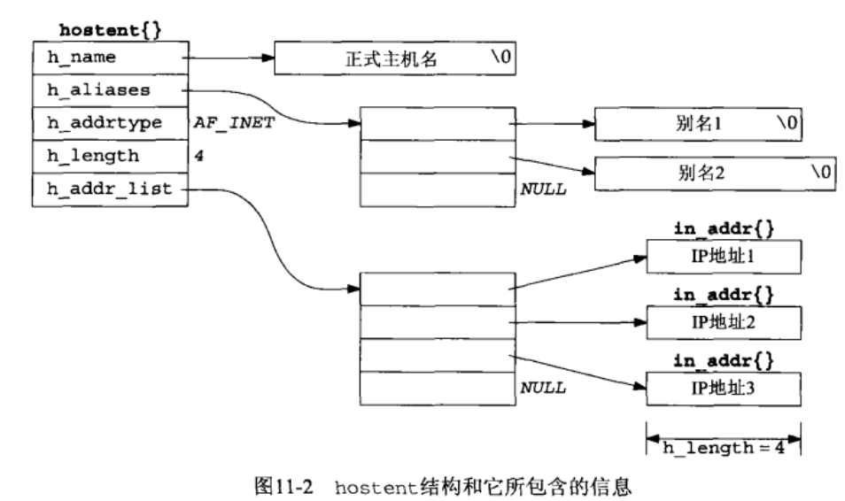
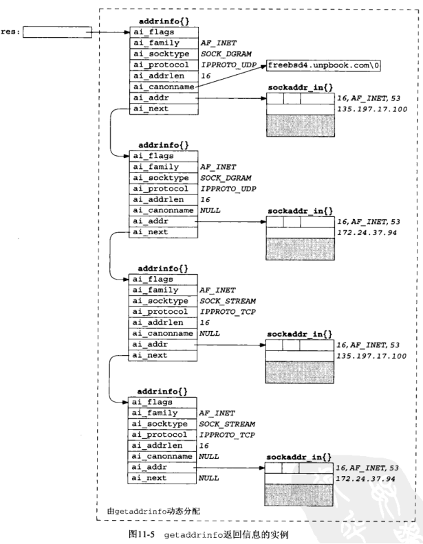

[UNP]:名称-地址转换函数
下面将介绍名称(主机名，服务名)与地址之间的转换函数
1. gethostbyname()
该函数用于从主机名获取IP地址
struct hostent
1
2
3
4
5
6
7struct hostent{
char *h_name; /* 主机的官方名称 */
char **h_aliases; /* 主机别名的指针数组 */
int h_addrtype; /* 主机IP地址的类型 */
int h_length; /* IPv4的地址长度 */
char** h_addr_list; /* IPV4地址列表, 以NULL结尾, 注意这里存储的部分点分十进制串，而是网络字节序 */
}图例

gethostbyname
1
2
3#include <netdb.h>
struct hostent * gethostbyname(const char * hostname)
// 成功：非空指针, 失败: NULL, h_errno被置为相关错误码hostname
主机名，如baidu.com
h_errnogethostbyname()的特殊之处在于，当发生错误时，它不设置errno，而是将全局整数变量设置为定义在<netdb.h>中的以下常量之一
- HOST_NOT_FOUND
- TRY_RECOVER
- NO_RECOVERY
- NO_DATA
2. gethostbyaddr()
该函数将一个二进制IP地址转换为主机名
gethostbyaddr
1
2
3
4#include <netdb.h>
struct hostent *gethostbyaddr(const void *addr, socklen_t len, int family);
// return: 成功返回非空指针，失败返回NULL, 设置h_errnoaddr
二进制IP地址，通常传入的就是
in_addr类型len
addr大小
family
协议族
3. getservbyname(), getservbyport()
这两个函数用于获取相关服务(ftp, domain等)的信息
struct strvent
1
2
3
4
5
6
7struct servent
{
char * s_name; // 官方服务名称
char ** s_aliases; // 别名列表
int s_port; // 端口号(网络字节序)
char * s_proto; // 协议
}getservbyname
一般使用该函数来获取某个服务的端口号
1
2
3#include <netdb.h>
struct servent * getservbyname(const char * servname, const char * protoname);
// return: 成功返回非空指针，失败返回NULLservname
服务的名称，可以是
domain,ftp等protoname
协议名，可以是
udp,tcp等有的服务支持多种协议
getservbyport
一般使用该函数来获取服务名称
1
2
3#include <netdb.h>
struct servent *getservbyport(int port, const char *protoname);
// return: 成功返回非空指针，失败返回NULLport
服务所在的端口号, 必须得是网络字节序
通常的使用方法如下
1
sptr = getservbyport(htons(21), "udp");protoname
协议名
4. getaddrinfo()
该函数能够处理名称到地址以及服务到端口这两种转换
getaddrinfo
1
2
3
4#include <netdb.h>
int getaddrinfo(const char * hostname, const char * service,
const struct addrinfo *hints,struct addrinfo **result);
//return: 成功返回0, 失败返回非0错误值hostname
主机名
service
服务名, 可以是字符串，也可以是网络字节序的端口号
hints
addrinfo
1
2
3
4
5
6
7
8
9
10struct addrinfo{
int ai_flags; // 选项
int ai_family; // 地址族
int ai_socktype; // 套接字类型
int ai_protocol; // 协议类型
socklen_t ai_addrlen; // ai_addr链表的大小
char * ai_canonname; // 主机名
struct sockaddr * ai_addr; // ptr to socket address structure
struct addrinfo * ai_next; // ptr to next structure in linked list
}
该参数用于对函数的返回值进行过滤，如在
ai_socktype字段填入SOCK_DGRAM, 那么函数就只会返回数据报套接字的信息hints参数中只能对以下字段进行设置
可以设置的成员 ai_flags零个或多个在一起的AI_XXX值. ai_family某个AF_XXX ai_socktype某个SOCK_XXX值 ai_protocol某个写控制协议 ai_flags可以设置的值如下ai_flags可能值 含义 AI_PASSIVE套接字将用于被动打开。 AI_CANONNAME告知 getaddrinfo 函数返回主机的规范名字 AI_NUMERICHOST防止任何类型的名字到地址映射， hostname参数必须为一个地址串 AI_NUMERICSERV防止任何类型的名字到服务的映射,service 参数必须是一个十进制端口号数串 AI_V4MAPPED如果同时指定 ai_family 成员的值为 AF_INET6,那么如果没有可用的AAAA记录，就返回与A记录对应的IPV4映射的IPV6地址 AI_ALL如果同时指定 AI_V4MAPPED 标志，那么除了返回与AAAA记录对应的IPV6地址外，还返回与A记录对应的IPV4映射的IPV6地址 AI_ADDRCONFIG按照所在主机的配置选择返回地址类型，也就是只查找与所在主机回馈接口以外的网络接口配置的IP地址版本一致的地址 AI_CANONNAME
如果在
hints中设置了该标志，那么返回的result链表的第一个节点的ai_canonname字段将包含所查找主机的规范名
result
该参数返回最终的查询结果，是一个链表的首地址, 看起来像这样

该函数虽然功能很强大，但是有点过于复杂，UNP中也认为其并不好用，故在此不做过多描述
5. gai_strerror()
该函数用于解析getaddrinfo()返回的非零错误值，将errno转换为字符串
gai_strerror
1
2
3#include <netdb.h>
const char * gai_strerror(int error);
// return：指向错误描述消息字符串的指针error
错误号
具体的错误消息如下
常数 说明 EAI_AGAIN名字解析中临时失败 EAI_BADFLAGSai_flags的值无效 EAI_FAIL名字解析中不可恢复地失败 EAI_FAMILY不支持 ai_family EAI_MEMORY内存分配失败 EAI_NONAMEhostname或service未提供，或者不可知 EAI_OVERFLOW用户参数缓冲区溢出（仅限 getnameinfo 函数） EAI_SERVICE不支持 ai_socktype 类型的service EAI_SOCKTYPE不支持 ai_socktype EAI_SYSTEM在errno变量中有系统错误返回
6. freeaddrinfo()
该函数同样与getaddrinfo()搭配使用, getaddrinfo()中返回的链表结构全部都是动态分配的(malloc), 需要调用freeaddrinfo()来将这些动态分配的结构释放
freeaddrinfo
1
2#include <netdb.h>
void freeaddrinfo(struct addrinfo *ai)ai
该参数应该指向由
getaddrinfo()返回的第一个addrinfo结构
本博客所有文章除特别声明外，均采用 CC BY-SA 4.0 协议 ，转载请注明出处！